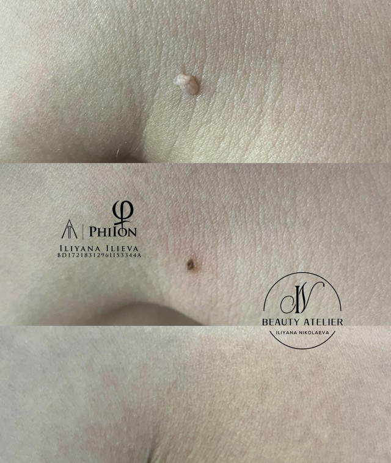
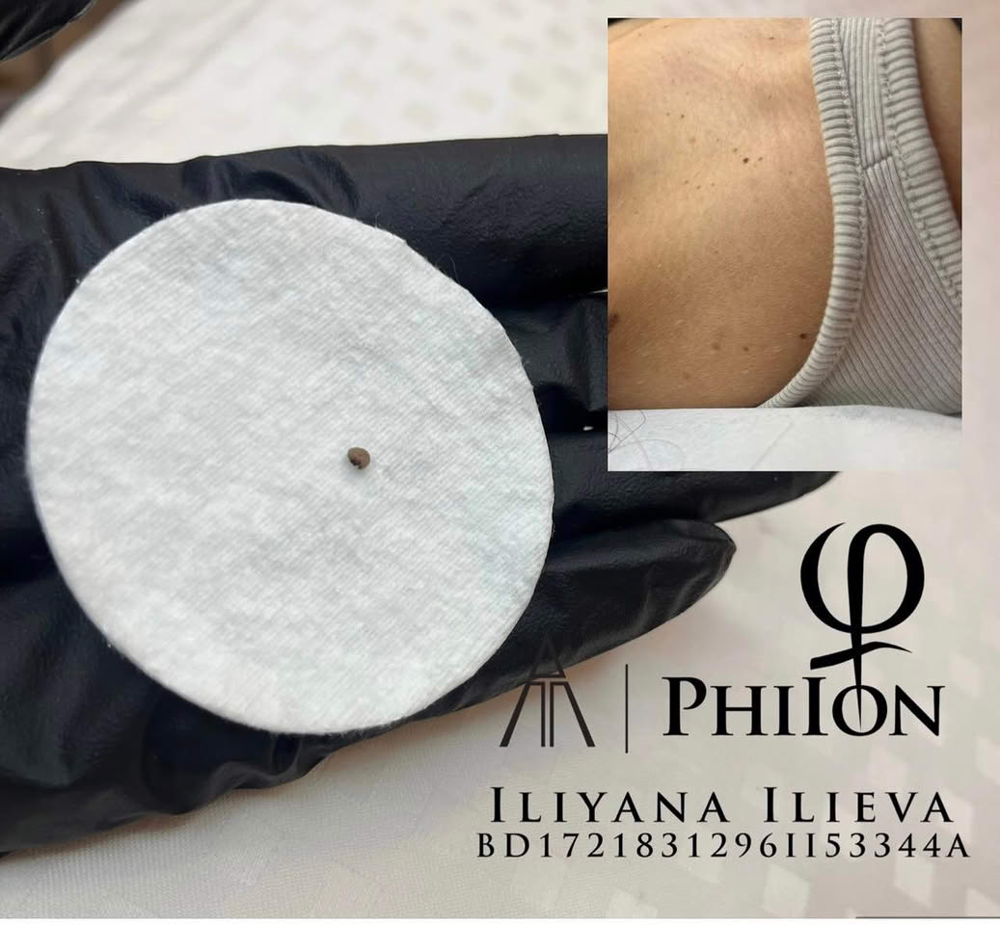
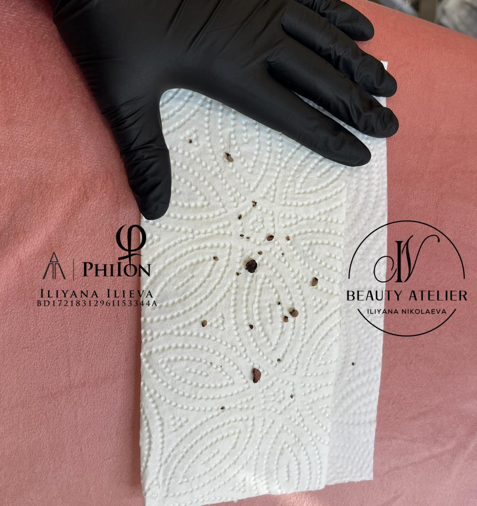

Фиброми и Брадавици

17
Май
2026
Фиброми и Брадавици: Какво Са, Защо Се Появяват и Как Се Премахват Професионално
Около 50-60% от възрастните развиват поне един фибром през живота си, а брадавиците са сред най-разпространените кожни проблеми в световен мащаб. Въпреки че и двете са доброкачествени образувания, те могат да предизвикат дискомфорт, несигурност и притеснения.
В тази статия ще разгледаме какво представляват фибромите и брадавиците, каква е разликата между тях, кога е нужна професионална намеса и какви са съвременните методи за безопасно и ефективно премахване.
Какво представляват фибромите?
Фибромите (акрохордони, меки фиброми) са доброкачествени кожни образувания, изградени от колагенови влакна и кръвоносни съдове, обвити от тънък слой епидермис. Те НЕ са ракови, НЕ са заразни и НЕ са причинени от вируси.
Обикновено се появяват като малки (2-5 мм), меки, телесно оцветени или леко пигментирани образувания на тънка дръжка. Най-често се срещат в зоните на триене:
- Шия — особено по страничните повърхности
- Подмишници — заради постоянното триене
- Под гърдите — зона на влага и контакт с бельо
- Слабини — ингвинални гънки
- Клепачи — особено при хора над 40 години
- Под колани и каишки на часовници — зони на механично дразнене
Какво представляват брадавиците?
За разлика от фибромите, брадавиците са причинени от инфекция с човешкия папиломен вирус (HPV). Те СА заразни и могат да се разпространяват както върху собственото тяло, така и към други хора при директен контакт.
Основните видове брадавици включват:
- Обикновени (Verruca Vulgaris): Грапави, повдигнати образувания — най-често по ръце, пръсти и колене
- Плоски (Verruca Plana): По-малки и гладки, появяват се в групи по 20-100 — често по лице и крака
- Подошвени (Verruca Plantaris): Растат навътре в ходилата и могат да бъдат болезнени при ходене
- Нишковидни: Дълги, тънки израстъци — типични за лицето (около устата, очите, носа)
Фиброми vs. Брадавици — каква е разликата?
Тези две състояния често се бъркат, но са напълно различни по произход и поведение:
| Характеристика | Фиброми | Брадавици |
|---|---|---|
| Причина | Триене, генетика, хормони | Вирусна инфекция (HPV) |
| Заразност | НЕ са заразни | ДА — разпространяват се при контакт |
| Текстура | Меки, гладки, подвижни | Грапави, твърди, с неравна повърхност |
| Форма | На тънка дръжка (педункулирани) | Плоски или повдигнати, без дръжка |
| Болка | Безболезнени | Могат да бъдат болезнени (подошвени) |
| Разпространение | Не се разпространяват | Могат да се разпространят по тялото |
| Типична локация | Кожни гънки (шия, подмишници) | Ръце, крака, лице |
Защо се появяват фиброми?
Основните рискови фактори за развитие на фиброми включват:
- Триене: Кожа-до-кожа контакт или триене от дрехи и бижута
- Наднормено тегло: Повече кожни гънки означава повече триене
- Хормонални промени: Бременност, хормонални контрацептиви, менопауза
- Инсулинова резистентност и диабет: Силна корелация — внезапно появяване на множество фиброми може да е индикатор
- Генетична предразположеност: Ако родителите ви имат фиброми, вероятността е по-голяма
- Възраст: Значително по-чести след 40-50 години
Кога е време за професионално премахване?
Фибромите са доброкачествени, но има ситуации, в които професионалната намеса е препоръчителна:
- Образуванието причинява естетичен дискомфорт — особено на видими зони като шия и лице
- Закачва се за дрехи или бижута и се дразни
- Появяват се нови фиброми и броят им нараства
- Промяна в размера, формата или цвета на образуванието
- Кървене без видима причина
- Болка или сърбеж
Важно: При промяна в цвета, асиметрия, неравни граници или бърз растеж — задължително се консултирайте с дерматолог, за да се изключат злокачествени промени.
Как премахваме фиброми в Beauty Atelier IN
В нашето студио използваме PhiIon технология — модерен метод за прецизно и безопасно премахване на фиброми чрез високочестотен електрически ток (електрокоагулация).
Важно: В Beauty Atelier IN извършваме премахване единствено на фиброми. Информацията за брадавиците в тази статия е с информативна цел — за тяхното третиране препоръчваме консултация с дерматолог.
Как работи процедурата:
- Специализиран уред генерира контролиран високочестотен ток чрез тънък наконечник
- Токът коагулира тъканта прецизно, без да засяга околната здрава кожа
- Кръвоносните съдове се запечатват едновременно — процедурата е безкръвна
- Не са необходими конци или шевове
- Фибромът се отстранява моментално по време на процедурата

Преди и след премахване на фибром с PhiIon технология — Beauty Atelier IN
Предимствата на PhiIon метода:
- Бързо: Отделен фибром се премахва за секунди, цяла сесия отнема 15-30 минути
- Безкръвно: Коагулацията запечатва съдовете моментално
- Прецизно: Засяга само образуванието, не околната кожа
- Минимален дискомфорт: Предварително се нанася локална упойка, което прави процедурата практически безболезнена
- Без белези: При правилна следпроцедурна грижа не остават следи

Премахнат фибром от зоната на шията — PhiIon процедура
Какво да очаквате по време на процедурата
Ето какво включва една типична сесия:
- Консултация: Оглеждаме образуванията и преценяваме дали са подходящи за козметично премахване
- Подготовка: Почистване и дезинфекция на зоната, след което се нанася локална упойка (анестетичен крем). Изчаква се около 20-30 минути, докато упойката подейства напълно
- Процедура: Прецизно премахване с PhiIon — фибромът се отстранява моментално, всеки отнема няколко секунди
- След процедурата: Нанасяне на антисептик и подробни инструкции за грижа
В една сесия могат да бъдат премахнати множество образувания — нашите клиенти често идват с 10, 20 или повече фиброми, натрупани през годините.

Множество фиброми, премахнати в една сесия — реален резултат от Beauty Atelier IN
Следпроцедурна грижа
Правилната грижа след процедурата е ключова за бързо зарастване без следи:
Първите 3-5 дни:
- На мястото на премахнатия фибром се образува малка коричка — това е нормална част от зарастването
- Зоната може да е леко зачервена и чувствителна
- Почиствайте внимателно с мек, pH-балансиран препарат
- Нанасяйте антисептичен крем или мехлем (ако е препоръчан)
- НЕ пипайте и НЕ дращете коричката — оставете я да падне сама
До пълно зарастване (7-14 дни):
- Избягвайте басейни, сауни и вани
- Не нанасяйте грим или козметика директно върху третираните зони
- Носете свободни, дишащи дрехи над третираните области
- Защитавайте от пряка слънчева светлина — използвайте SPF 50+ след зарастване
Внимание: Ако забележите силна болка, гноен секрет, отоци или повишена температура — свържете се с нас незабавно.
7 мита за фибромите и брадавиците
Има много погрешни схващания около тези кожни образувания. Нека разбием най-разпространените:
Мит 1: Фибромите и брадавиците са едно и също нещо
Напълно различни състояния. Фибромите са невирусни доброкачествени образувания, а брадавиците са причинени от HPV вирус.
Мит 2: Фибромите са заразни
Не. Фибромите не могат да се предадат на друг човек или да се разпространят по тялото ви.
Мит 3: Може безопасно да ги премахнете сами вкъщи
Домашното премахване (връзване с конец, рязане с ножица) крие рискове от инфекция, кървене, белези и непълно отстраняване. Професионалното третиране е значително по-безопасно.
Мит 4: Брадавиците имат „корени"
Брадавиците НЕ имат корени. Растат само в горния слой на кожата (епидермис). Тъмните точки, които понякога се виждат, са тромбозирали капиляри, не „семена".
Мит 5: Жабите причиняват брадавици
Абсолютен мит. Брадавиците се причиняват единствено от човешкия папиломен вирус (HPV). Контактът с животни няма нищо общо.
Мит 6: Премахването винаги оставя белези
Съвременните методи като PhiIon електрокоагулация рядко оставят видими следи, когато процедурата е извършена професионално и се спазва правилна следпроцедурна грижа.
Мит 7: Веднъж премахнати, никога не се връщат
Конкретният премахнат фибром няма да израсне отново на същото място. Но ако рисковите фактори (наднормено тегло, триене, хормонален дисбаланс) продължават да съществуват, нови фиброми могат да се появят.
Превенция: Как да намалите риска
За фиброми:
- Поддържайте здравословно тегло — по-малко кожни гънки, по-малко триене
- Носете меки, дишащи дрехи, които не стягат
- Избягвайте тежки бижута, които дразнят кожата
- Контролирайте кръвната захар при диабет или инсулинова резистентност
- Използвайте пудра в кожните гънки за намаляване на влагата
За брадавици:
- Не пипайте брадавици — нито свои, нито чужди
- Носете чехли в обществени бани, басейни и съблекални
- Не споделяйте лични вещи (кърпи, ножички, пили за нокти)
- Спрете да си гризете ноктите — повредената кожа е входна точка за HPV
- Укрепвайте имунната си система чрез балансирано хранене и достатъчен сън
- Не бръснете над съществуващи брадавици — това разпространява вируса
Нашият подход в Beauty Atelier IN
В Beauty Atelier IN извършваме професионално премахване на фиброми и други доброкачествени кожни образувания с помощта на сертифицирана PhiIon технология. Илияна Николаева е обучен и сертифициран PhiIon специалист с богат опит в тази област.
Всяка процедура започва с детайлна консултация, при която оценяваме образуванията и определяме най-подходящия подход. При съмнения за нетипични промени, винаги препоръчваме консултация с дерматолог преди процедурата.
Процедурата е бърза, практически безболезнена и с минимално възстановяване. Повечето клиенти се връщат към ежедневните си активности веднага след нея.
Запазете безплатна консултация и нека преценим заедно кои образувания са подходящи за премахване.